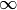

lingpy.algorithm.cython package¶
Submodules¶
lingpy.algorithm.cython.calign module¶
Basic module for sound-class based alignment analyses.
-
lingpy.algorithm.cython.calign.align_pair()¶ Align a pair of sequences.
-
lingpy.algorithm.cython.calign.align_pairs()¶ Align multiple sequence pairs.
-
lingpy.algorithm.cython.calign.align_pairwise()¶ Align a list of sequences pairwise.
-
lingpy.algorithm.cython.calign.align_profile()¶ Align two profiles using the basic modes.
-
lingpy.algorithm.cython.calign.corrdist()¶ Create a correspondence distribution for a given language pair.
-
lingpy.algorithm.cython.calign.dialign()¶ Carry out semi-global alignment of two sequences.
-
lingpy.algorithm.cython.calign.globalign()¶ Carry out global alignment of two sequences.
-
lingpy.algorithm.cython.calign.localign()¶ Carry out semi-global alignment of two sequences.
-
lingpy.algorithm.cython.calign.score_profile()¶ Basic function for the scoring of profiles.
-
lingpy.algorithm.cython.calign.secondary_dialign()¶ Carry out semi-global alignment of two sequences.
-
lingpy.algorithm.cython.calign.secondary_globalign()¶ Carry out global alignment of two sequences.
-
lingpy.algorithm.cython.calign.secondary_localign()¶ Carry out global alignment of two sequences.
-
lingpy.algorithm.cython.calign.secondary_semi_globalign()¶ Carry out global alignment of two sequences.
-
lingpy.algorithm.cython.calign.semi_globalign()¶ Carry out semi-global alignment of two sequences.
-
lingpy.algorithm.cython.calign.swap_score_profile()¶ Basic function for the scoring of profiles.
lingpy.algorithm.cython.cluster module¶
This module provides functions for basic cluster algorithms.
-
lingpy.algorithm.cython.cluster.flat_cluster()¶ Carry out a flat cluster analysis based on the UPGMA algorithm.
Parameters: method : str { ‘upgma’, ‘single’, ‘complete’ }
Select between ‘ugpma’, ‘single’, and ‘complete’.
threshold : float
The threshold which terminates the algorithm.
matrix : list or
numpy.arrayA two-dimensional list containing the distances.
taxa : list (default = [])
A list containing the names of the taxa. If the list is left empty, the indices of the taxa will be returned instead of their names.
Returns: clusters : dict
A dictionary with cluster-IDs as keys and a list of the taxa corresponding to the respective ID as values.
See also
lingpy.algorithm.clusters.upgma,lingpy.algorithm.clusters.neighborExamples
The function is automatically imported along with LingPy.
>>> from lingpy import *
Create a list of arbitrary taxa.
>>> taxa = ['German','Swedish','Icelandic','English','Dutch']
Create an arbitrary distance matrix.
>>> matrix = squareform([0.5,0.67,0.8,0.2,0.4,0.7,0.6,0.8,0.8,0.3]) >>> matrix array([[ 0. , 0.5 , 0.67, 0.8 , 0.2 ], [ 0.5 , 0. , 0.4 , 0.7 , 0.6 ], [ 0.67, 0.4 , 0. , 0.8 , 0.8 ], [ 0.8 , 0.7 , 0.8 , 0. , 0.3 ], [ 0.2 , 0.6 , 0.8 , 0.3 , 0. ]])
Carry out the flat cluster analysis.
>>> flat_upgma(0.5,matrix,taxa) {0: ['German', 'Dutch', 'English'], 1: ['Swedish', 'Icelandic']}
-
lingpy.algorithm.cython.cluster.flat_upgma()¶ Carry out a flat cluster analysis based on the UPGMA algorithm (
Sokal1958).Parameters: threshold : float
The threshold which terminates the algorithm.
matrix : list or
numpy.arrayA two-dimensional list containing the distances.
taxa : list (default = [])
A list containing the names of the taxa. If the list is left empty, the indices of the taxa will be returned instead of their names.
Returns: clusters : dict
A dictionary with cluster-IDs as keys and a list of the taxa corresponding to the respective ID as values.
See also
lingpy.algorithm.clusters.upgma,lingpy.algorithm.clusters.neighborExamples
The function is automatically imported along with LingPy.
>>> from lingpy import *
Create a list of arbitrary taxa.
>>> taxa = ['German','Swedish','Icelandic','English','Dutch']
Create an arbitrary distance matrix.
>>> matrix = squareform([0.5,0.67,0.8,0.2,0.4,0.7,0.6,0.8,0.8,0.3]) >>> matrix array([[ 0. , 0.5 , 0.67, 0.8 , 0.2 ], [ 0.5 , 0. , 0.4 , 0.7 , 0.6 ], [ 0.67, 0.4 , 0. , 0.8 , 0.8 ], [ 0.8 , 0.7 , 0.8 , 0. , 0.3 ], [ 0.2 , 0.6 , 0.8 , 0.3 , 0. ]])
Carry out the flat cluster analysis.
>>> flat_upgma(0.5,matrix,taxa) {0: ['German', 'Dutch', 'English'], 1: ['Swedish', 'Icelandic']}
-
lingpy.algorithm.cython.cluster.neighbor()¶ Function clusters data according to the Neighbor-Joining algorithm (
Saitou1987).Parameters: matrix : list or
numpy.arrayA two-dimensional list containing the distances.
taxa : list
An list containing the names of all taxa corresponding to the distances in the matrix.
distances : bool
If set to
False, only the topology of the tree will be returned.Returns: newick : str
A string in newick-format which can be further used in biological software packages to view and plot the tree.
See also
lingpy.algorithm.cluster.upgma,lingpy.algorithm.cluster.flat_upgmaExamples
Function is automatically imported when importing lingpy.
>>> from lingpy import *
Create an arbitrary list of taxa.
>>> taxa = ['Norwegian','Swedish','Icelandic','Dutch','English']
Create an arbitrary matrix.
>>> matrix = squareform([0.5,0.67,0.8,0.2,0.4,0.7,0.6,0.8,0.8,0.3])
Carry out the cluster analysis.
>>> neighbor(matrix,taxa) '(((Norwegian,(Swedish,Icelandic)),English),Dutch);'
-
lingpy.algorithm.cython.cluster.upgma()¶ Carry out a cluster analysis based on the UPGMA algorithm (
Sokal1958).Parameters: matrix : list or
numpy.arrayA two-dimensional list containing the distances.
taxa : list
An list containing the names of all taxa corresponding to the distances in the matrix.
distances : bool
If set to
False, only the topology of the tree will be returned.Returns: newick : str
A string in newick-format which can be further used in biological software packages to view and plot the tree.
See also
lingpy.algorithm.cluster.neighbor,lingpy.algorithm.cluster.flat_upgmaExamples
Function is automatically imported when importing lingpy.
>>> from lingpy import *
Create an arbitrary list of taxa.
>>> taxa = ['German','Swedish','Icelandic','English','Dutch']
Create an arbitrary matrix.
>>> matrix = squareform([0.5,0.67,0.8,0.2,0.4,0.7,0.6,0.8,0.8,0.3])
Carry out the cluster analysis.
>>> upgma(matrix,taxa,distances=False) '((Swedish,Icelandic),(English,(German,Dutch)));'
lingpy.algorithm.cython.compilePYX module¶
-
lingpy.algorithm.cython.compilePYX.main()¶
-
lingpy.algorithm.cython.compilePYX.pyx2py(infile, debug=False)¶
lingpy.algorithm.cython.malign module¶
Module provides miscellaneous alignment algorithms.
-
lingpy.algorithm.cython.malign.edit_dist()¶ Return the edit-distance between two strings.
-
lingpy.algorithm.cython.malign.nw_align()¶ Align two sequences using the Needleman-Wunsch algorithm.
-
lingpy.algorithm.cython.malign.restricted_edit_dist()¶ Return the restricted edit-distance between two strings.
Notes
Restrictions follow the definition of
Heeringa2006: Segments that are not allowed to match are given a penalty of .
-
lingpy.algorithm.cython.malign.structalign()¶ Carry out a structural alignment analysis using Dijkstra’s algorithm.
Parameters: seqA,seqB : str
The input sequences.
restricted_chars : str (default = “”)
The characters which are used to separate secondary from primary segments in the input sequences. Currently, the use of restricted chars may fail to yield an alignment.
-
lingpy.algorithm.cython.malign.sw_align()¶ Align two sequences using the Smith-Waterman algorithm.
-
lingpy.algorithm.cython.malign.we_align()¶ Align two sequences using the Waterman-Eggert algorithm.
lingpy.algorithm.cython.misc module¶
Module provides miscellaneous functions and routines.
-
class
lingpy.algorithm.cython.misc.ScoreDict¶ Bases:
objectClass allows quick access to scoring functions using dictionary syntax.
Parameters: chars : list
The list of all character tokens for the scoring dictionary.
matrix : list
A two-dimensional scoring matrix.
-
lingpy.algorithm.cython.misc.squareform()¶ A simplified version of the
scipy.spatial.distance.squareform()function.Parameters: x :
numpy.arrayor listThe one-dimensional flat representation of a symmetrix distance matrix.
Returns: matrix :
numpy.arrayThe two-dimensional redundant representation of a symmetric distance matrix.
-
lingpy.algorithm.cython.misc.transpose()¶ Transpose a matrix along its two dimensions.
Parameters: matrix : list
A two-dimensional list.
lingpy.algorithm.cython.talign module¶
Basic module for sound-class based alignment analyses.
-
lingpy.algorithm.cython.talign.align_pair()¶ Align a pair of sequences.
-
lingpy.algorithm.cython.talign.align_pairs()¶ Align multiple sequence pairs.
-
lingpy.algorithm.cython.talign.align_pairwise()¶ Align a list of sequences pairwise.
-
lingpy.algorithm.cython.talign.align_profile()¶ Align two profiles using the basic modes.
-
lingpy.algorithm.cython.talign.dialign()¶ Carry out semi-global alignment of two sequences.
-
lingpy.algorithm.cython.talign.globalign()¶ Carry out global alignment of two sequences.
-
lingpy.algorithm.cython.talign.localign()¶ Carry out semi-global alignment of two sequences.
-
lingpy.algorithm.cython.talign.score_profile()¶ Basic function for the scoring of profiles.
-
lingpy.algorithm.cython.talign.semi_globalign()¶ Carry out semi-global alignment of two sequences.
-
lingpy.algorithm.cython.talign.swap_score_profile()¶ Basic function for the scoring of profiles.
Module contents¶
Package provides modules for time-consuming routines.